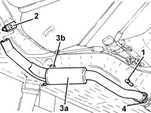
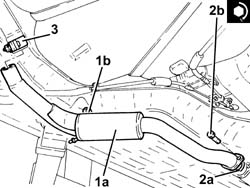

1076B24 INTERMEDIATE EXHAUST SILENCER - R + R
- Path
- Procedures > 10 ENGINE UNIT > 1076 EXHAUST PIPES AND SILENCERS > 1076B EXHAUST PIPES AND SILENCERS > 1076B24 INTERMEDIATE EXHAUST SILENCER - R + R
- Kind
- repair procedure (removal / refitting; the operation number is the code)
- Applies to
- engines: 2.0 JTS; all production periods
- Interactive page
- https://sloeber94.github.io/elrnDB-aGt/en/#/125001103
Applies to: engines: 2.0 JTS; all production periods
 Removing
Removing
 Refitting
RefittingPosition the vehicle on the ramp
1. Undo the bolts fixing the intermediate exhaust silencer to the front exhaust silencer.
2. Loosen the collar fixing the rear exhaust silencer to the intermediate exhaust silencer.
3. Remove the intermediate exhaust silencer (3a) after releasing it from the flexible support (3b) and the rear exhaust silencer.
4. Remove the seal.

Applies to: engines: 2.0 JTS; all production periods
Refitting
Removing1. Refit the intermediate exhaust silencer (1a) in its seating, connect it to the rear exhaust silencer and secure it to the relevant flexible support (1b).
2. Place the seal (2a) back in its housing, then tighten the bolts (2b) fixing the intermediate exhaust silencer to the front exhaust silencer to the recommended torque.
 | Fastening | Component | Ø | Value (daNm) |
|---|---|---|---|---|
2b | Bolt | FRONT EXHAUST SILENCER | M8 | (Intermediate silencer side 23 28 |
3. Tighten the collar fixing the rear exhaust silencer to the intermediate exhaust silencer.

Applies to: engines: 2.0 JTS; all production periods
Remove the car from the ramps.
Topics that link to this page (6)
- 1040A10 FUEL TANK - R + R AND DECANT FUEL
- 1040A14 FUEL TANK - R + R FOR REPLACEMENT
- 1076A40 EXHAUST PIPE HEAT SHIELD - R R
- 2127A70 SUPPORT FOR CONTROL LEVERS FOR MANUAL GEARBOX WITH HYDRAULIC SELECTION AND HANDBRAKE - R R
- 3340B67 RH BRAKE CONNECTION PIPE - R R
- 3340B69 RHP BRAKE CONNECTION PIPE - R R